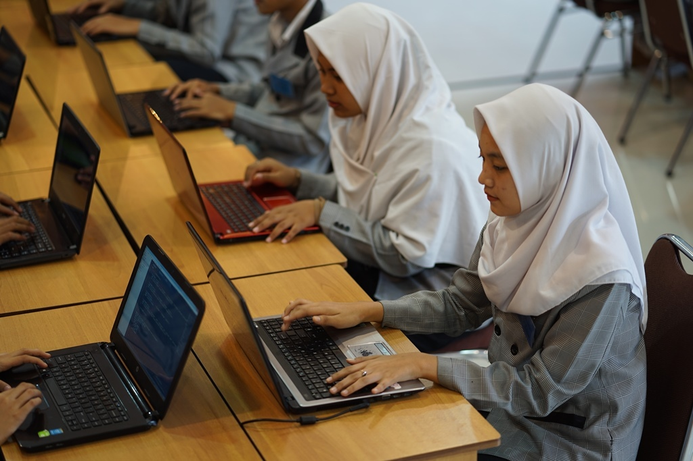
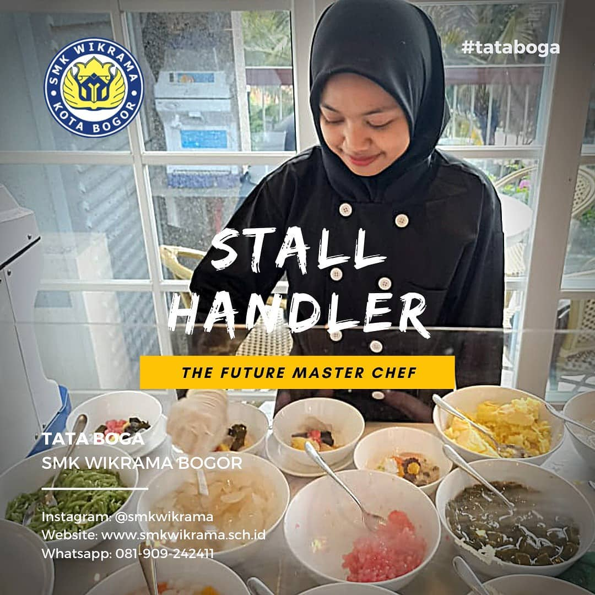
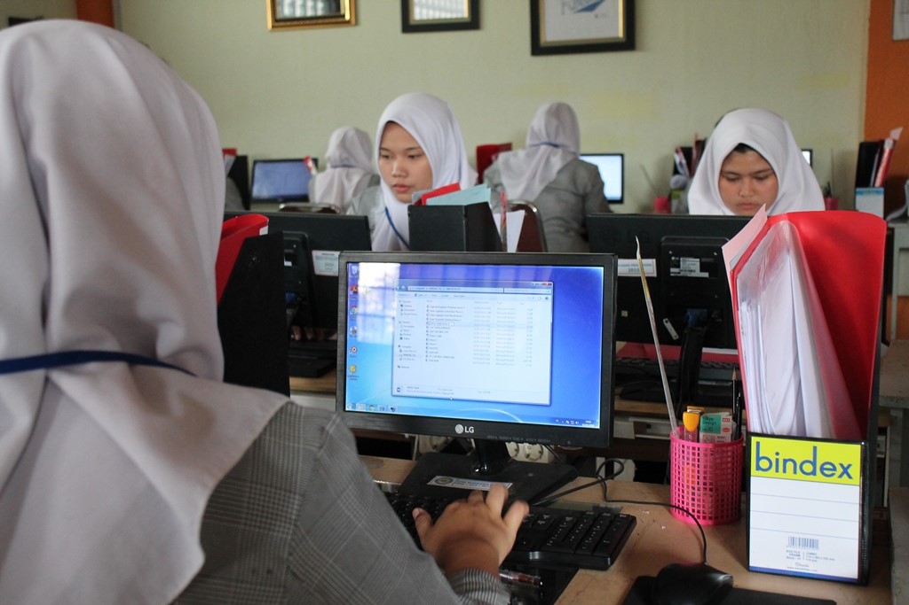
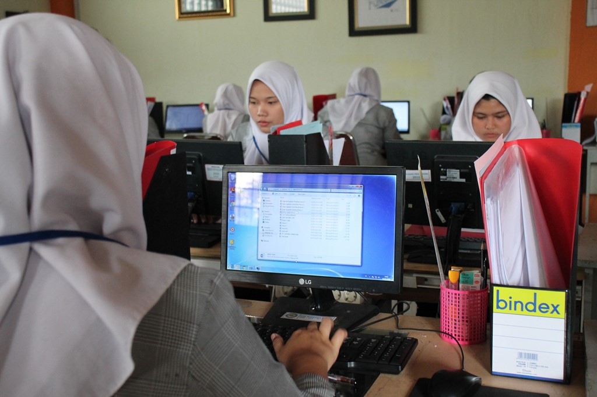

Otomatisasi dan Tata Kelola Perkantoran
-
Berdiri/Akreditasi: Kompetensi keahlian Otomatisasi dan Tata Kelola
Perkantoran/Administrasi Perkantoran didirikan pada tahun 1996 dengan akreditasi A (amat baik)
-
Keahlian: Mengetik cepat dengan teknik 10 jari dengan rata-rata kecepatan 250 EPM 98%,
mengelola dokumen dan arsip kantor, menangani telepon, mengelola keuangan dan mampu menangani tamu
- Model Belajar : Teaching Factory
- Pohon Kompetensi:
-
CBT : CBT dilakukan selama 5 hari oleh peserta didik kelas XI, dari pukul 07.30 s/d 16.00 WIB ditempatkan
diberbagai unit seperti tata usaha, kurikulum, kesiswaan, koperasi, perpustakaan,
ruang kepala jurusan, guru mata pelajaran, BP/BK.
-
Keunggulan: Kompetensi keahlian Otomatisasi dan Tata Kelola Perkantoran/Administrasi Perkantoran memiliki
keunggulan dibidang prestasi peserta didik seperti juara II lomba keterampilan siswa bidang lomba sekretaris
tingkat provinsi tahun 2016 dan juara I lomba olimpiade sekretaris tingkat nasional tahun 2017
- Mitra Industri:
- 1. Danone Aqua – Jl. Mayjen HE . Sukma, Caringin, Bogor
- 2. CV. Prima Utama Bogor – wilayah Bogor
- 3. CV. Delima Mandiri – Kota Bogor
- 4. PT. Solid Gold Berjangka – Jakarta Pusat
- 5. PT. Telkom Indonesia – Jakarta
- 6. PT. Myindo Cyber Media – Jakarta Selatan
- 7. PT. Lotus Boga Lima – Jakarta
- 8. PT. Tatamulia Nusantara Indah – wilayah Jakarta
- 9. PT. Yongjin Javasuka Garment – Sukabumi
- 10. Que Bread Bakery (kuntum farm field) – Bogor
-
Sertifikasi: TOEIC (Test of English for International Communication), tes mengetik internasional
(typingweb.com), Microsoft Office Specialist (MOS – Certiport)
Teknik Komputer dan Jaringan
-
Berdiri/Akreditasi: Kompetensi keahlian Teknik Komputer dan Jaringan didirikan pada tahun
2004 dan sudah memiliki akreditasi A
-
Keahlian: Peserta didik mampu menjadi seorang teknisi jaringan, administrasi jaringan,
network engineer dan menguasai komunikasi. Menginstalasi perangkat komputer personal, menginstal
sistem operasi dan aplikasi. Menginstal perangkat jaringan lokal (Local Area Network), menginstal perangkat
jaringan berbasis luas (Wide Area Network).
- Model Belajar: Teaching Factory
- Pohon Kompetensi:
-
CBT: Beberapa CBT pada kompetensi keahlian Teknik Komputer dan Jaringan di antaranya keahlian, lingkungan dan kewirausahaan.
-
Keunggulan: Kompetensi keahlian Teknik Komputer dan Jaringan sudah memiliki sertifikasi internasional
seperti CNAP (Cisco Networking Academy Program) dan MCNA (Mikrotik Certified Network Associate).
- Mitra Industri:
- 1. PT. Nutrifood Indonesia Bogor
- 2. PT. Ghalia Indonesia Printing
- 3. PT. Hipernet Indodata
- 4. PT. Kabatama Raya
- 5. PT. Indonesia Indicator
- 6. PT. Tirta Fresindo Jaya (Mayora Group)
- 7. Macro Komputer
- 8. SEAMEO Biotrop
- 9. PT. Jetcoms Netindo
- 10. PT. Astra Auto Part
-
Fasilitas dan Sarpras: Laboratorium perakitan, perbaikan dan perawatan komputer,
laboratorium instalasi jaringan LAN dan laboratorium instalasi jaringan WAN.
-
Sertifikasi: TOEIC (Test of English for International Communication), CNAP
(Cisco Networking Academy Program), MCNA (Mikrotik Certified Network Associate)


Rekayasa Perangkat Lunak
- Berdiri/Akreditasi: Didirikan pada Tahun 2003 dengan akreditasi A (amat baik)
- Keahlian:
-
1. Memiliki kemampuan menjelaskan dan menerapkan ilmu matematika dan ilmu komputer dasar
sebagai basis pembangunan sebuah perangkat lunak yang berkualitas.
-
2. Memiliki kemampuan menjelaskan, menerapkan, dan memilih berbagai teori, model, teknik dan
teknologi yang tepat dalam pembangunan perangkat lunak yang berkualitas pada lingkungan berbasis web,
desktop dan mobile.
-
3. Merancang solusi perangkat lunak berbasis web, desktop dan mobile dalam berbagai skala kompleksitas
yang mengintegrasikan persoalan ethical, social, legal, security dan ekonomi.
-
4. Terampil menggunakan teknologi dan tools terkini dalam pembangunan perangkat lunak yang berkualitas
pada lingkungan berbasis web dan mobile.
-
5. Menerapkan profesionalisme dalam berkarya sesuai dengan etika bidang Rekayasa Perangkat Lunak.
-
6. Berkomunikasi secara efektif pada berbagai kalangan baik secara lisan maupun tulisan.
-
7. Mengikuti perkembangan berbagai teknik, teknologi dan tools baru dalam bidang rekayasa perangkat lunak
pada lingkungan berbasis web, desktop dan mobile.
-
8. Bekerjasama secara efektif baik sebagai anggota tim maupun pemimpin tim pada proyek pembangunan perangkat lunak.
-
9. Mengidentifikasi kebutuhan untuk menjadi seorang wirausaha/pebisnis dibidang industri kreatif khususnya dalam
pengembangan perangkat lunak.
-
Model Belajar : Teaching Factory
-
Pohon Kompetensi:
-
CBT: Kegiatan Competency Based Training (CBT) bertujuan untuk menumbuhkembangkan karakter dan etos kerja (disiplin,
tanggung jawab, jujur, kerjasama, kepemimpinan, dan lain-lain) yang dibutuhkan DU/DI serta meningkatkan kualitas hasil pembelajaran.
Kegiatan CBT Rekayasa Perangkat Lunak meliputi kegiatan dimulai dari mencari proyek baik dari internal/eksternal sekolah,
mengidentifikasi kebutuhan pemberi proyek (requirements), melakukan desain proyek (design), melakukan implementasi (coding), dan
melakukan pengujian proyek (testing).
-
Keunggulan: Desktop Programming, Web Programming, Mobile Programming, Bussiness Analyst, Database Administration.
- Mitra Industri:
-
1. PT Sakura System - Software house di bawah Nippon Steel - Jakarta Pusat
-
2. PT Anabatic Technology - IT Solution dengan taraf Internasional - Tangerang
-
3. PT Astra Autopart Cibitung - Sistem Kaizen - Software Development – Bekasi
-
4. PT Fujitech
-
5. PT Epson
-
6. PT Amerta Indah Otsuka - Pasar Rebo Jakarta
-
7. PT. Honoris - Ciawi Bogor
-
8. PT. Nittoh Presisi Indonesia - Jl. Raya Jakarta Bogor KM 47, Nanggewer Mekar Cibinong
-
9. PT. Hitachi Indonesia – Jakarta
-
10. PT Hilex – Tangerang
-
Fasilitas dan Sarpras: Lab, software house, Teaching Factory
-
Sertifikasi: TOEIC Test (Test of English International Communication), Microsoft Technology Associate
(Office, HTML 5, Database Fundamental)
Multimedia
-
Berdiri/Akreditasi: Didirikan pada tahun 2011 dan sudah mendapat akreditasi A.
-
Keahlian: kompetensi keahlian Multimedia menjawab tantangan perkembangan komunikasi visual, desain grafis dan multimedia.
Materi yang dipelajari antara lain pengetahuan dasar tentang seni terapan, fotografi digital (tata cahaya, komposisi,
lighting studio), videografi (Adobe Premiere, Adobe After Effect), desain grafis (Adobe Photoshop, Adobe Illustrator,
Adobe Indesign), kemampuan grafis 3D (Blender, 3D Studio Max), kemampuan animasi (HTML, Adobe Flash) dan proses kreatif
dalam membuat suatu karya audio visual.
-
Model Belajar : Teaching Factory
-
Pohon Kompetensi:
-
CBT:
-
Keunggulan: Lulusan dapat memiliki kesempatan kerja yang luas dibidang periklanan, production house, radio & televisi, studio foto,
percetakan grafis, corporate brand identity, penerbit majalan/Koran, dll.
- Mitra Industri:
-
1. Binus TV
-
2. Riovertex Animation Studios – Bogor
-
3. PT. Eka Surya
-
4. PT. Kreasi Mata Ketiga
-
5. PT. Media Pangan Indonesia
-
6. Mata Angin Advertising
-
7. Pantarei Advertising
-
8. PT. Amertha Cipta Ananta
-
9. PT. Zamasco Mitra Solusindo
-
10. Taufiq TV Production – Bogor
-
Fasilitas dan Sarpras: Kompetensi keahlian Multimedia memiliki beberapa fasilitas serta sarana & prasarana yaitu
laboratorium studio foto, laboratorium komputer editing, ruang belajar bersama, alat rekam audio digital,
komputer rendering, kamera mirrorless dan DSLR.
-
Sertifikasi: LSP (Lembaga Sertifikasi Profesi), BNSP (Badan Nasional Sertifikasi Profesi), TOEIC
(Test of English for International Communication), Adobe.
Bisnis Daring dan Pemasaran
-
Berdiri/Akreditasi: Kompetensi keahlian Bisnis Daring dan Pemasaran didirikan pada tahun 2014,
dan dan memperoleh akreditasi dari Badan Akreditasi Nasional Sekolah/Madrasah (BAN-SM) dengan nilai A.
-
Keahlian: Portofolio seperti membuat desain untuk bisnis sendiri, creative content (berbasis media sosial/website),
website berbasis toko online dengan bahasa pemrograman sederhana dan soft skill yang terdiri dari komunikasi,
telemarketing dan marketing komunikasi.
-
Model Belajar : Teaching Factory
-
Pohon Kompetensi:
-
CBT: CBT pada kompetensi keahlian Pemasaran dilakukan dengan cara memberikan penugasan kepada siswa/i berupa proyek.
Siswa/i membantu para pemilik usaha pada UMKM dalam mengoptimalkan usaha (pemasaran online).
-
Keunggulan: Kompetensi keahlian Bisnis Daring dan Pemasaran memiliki kompetensi yang mirip dengan program Multimedia dan Perkantoran.
Lulusan program ini diharuskan mampu membuat foto produk, desain, copy writing, dll.
-
Mitra Industri: Tapp Market, Cyberlab, UMKM kota Bogor, Software house
-
Fasilitas dan Sarpras: Kompetensi keahlian Bisnis Daring dan Pemasaran memiliki fasilitas serta sarana &
prasarana yang menunjang seperti laboratorium komputer, laboratorium jurusan (wikrama shop), ruang teori.
-
Sertifikasi: TOEIC, (Test of English for International Communication) Microsoft Office Specialist (MOS – Certiport),
Marketing Online


Tata Boga
Tata boga adalah ilmu pengetahuan mengenai boga (seni mengolah masakan) yang meliputi persiapan pengolahan sampai
dengan menghidangkan makanan itu sendiri yang bersifat tradisional maupun Internasional.
Kompetensi Keahlian Tata Boga, merupakan salah satu jurusan atau kompetensi yang memberikan Pelajaran di bidang
Pengolahan dan Penyajian Makanan baik oriental maupun kontinental serta mampu memberikan pelayanan makanan dan minuman
di restoran (Food and Beverage Service).
-
Kompetensi keahlian Tata Boga didirikan pada tahun 2017 dan terakreditasi B (baik)
-
Keahlian: Pengetahuan pariwisata, pengetahuan mengenai bahan, pengolahan, penyajian dan penyimpanan bahan sesuai dengan jenis bahan makanannya,
memerhatikan kandungan gizi, sanitasi, higiene dan keamanan pangan yang disajikan, mampu mengolah berbagai jenis hidangan Indonesia,
kontinental, pastry & bakery serta disajikan secara/berstandar internasional dan mampu melayani berbagai pelayanan makanan di restoran.
-
CBT: CBT pada kompetensi keahlian Tata Boga di antaranya CBT kewirausahaan, CBT pendidikan lingkungan hidup, CBT humas dan CBT produktif.
-
Keunggulan: Siswa jurusan Tata Boga mampu bekerja diberbagai bidang jasa boga seperti restoran, hotel, rumah sakit, katering sesuai
dengan minat dan bakat yang telah dipelajari.
-
Fasilitas & Sarpras: Laboratorium Praktikum Pengolahan dan Penyajian, Laboratorium Tata Hidang dan Ruang Teori.
-
Sertifikasi: Badan Nasional Sertifikasi Profesi (BNSP)
Perhotelan
-
Berdiri/Akreditasi: Kompetensi keahlian Perhotelan didirikan pada tahun 2017 dan menjadi jurusan ke-7 di SMK Wikrama Bogor,
dengan nilai akreditasi B ( baik )
-
Keahlian: Pengetahuan pariwisata, layanan telepon operator, layanan bellboy/porter, layanan reservasi, layanan resepsionis, layanan dokumen transaksi keuangan, layanan houskeeping meliputi layanan kamar, public area dan loundry (binatu)
- Pohon Kompetensi:
-
CBT: CBT untuk kompetensi keahlian Perhotelan yaitu terdiri dari CBT kewirausahaan, kantin, humas dan CBT produktif.
-
Keunggulan: Siswa jurusan Perhotelan akan mampu bekerja di departemen yang ada di hotel dengan kompetensi yang mereka pelajari.
- Fasilitas dan Sarpras: Ruang khusus teori, ruang praktikum, miniatur hotel.
-
Sertifikasi: TOEIC dan sertifikasi pariwisata dari BNSP.
 
